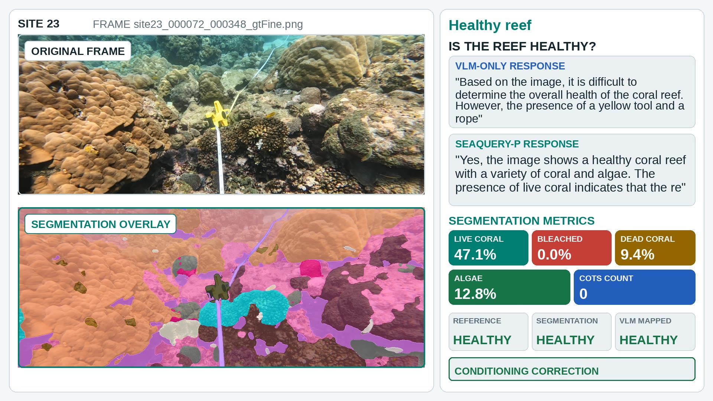

SeaQuery measures coral cover in a reef image and gives those measurements to a vision-language model. How much do they improve its answers, and when is it more reliable to apply a reef-state rule directly?
Technical summary
Full paper summary
Narrated summary of the article · 5:42. Captions are included in the video.
Reef-state decision experiment
One experiment from the paper: explicit rules versus vision-language inference · 2:08.
Conditioning reef assessments on ecological measurements
SeaQuery extracts five ecological measurements from a segmentation model (live, bleached and dead coral cover, algae cover, and crown-of-thorns starfish count) and supplies them to a vision-language model, either as a text prefix (SeaQuery-P) or fused at the embedding level (SeaQuery-F), with adaptive or full-metric context.
Visual question answering is evaluated on 5,158 CoralVQA questions from 1,037 images, across five zero-shot variants from four model families and LoRA-adapted variants (45 configurations). Conditioning improves exact match for four of the five zero-shot variants; PaliGemma2-Mix degrades. LoRA gives the largest absolute gains.
On the 392-image Coralscapes test split, metric agreement varies by category. For an author-defined three-state reef rule with asymmetric error costs, the segmentation pathway is the most reliable: it is lowest-cost across all 40 cost specifications and labels one of 160 degraded reefs as healthy.
Reef-state experiment: the three-state rule
Healthy: live coral > 30% and bleached < 10%. Degraded: live coral < 10% or bleached > 25%. Stressed: otherwise.
Reef-state examples
Reef-health query: VLM-only versus SeaQuery-P
